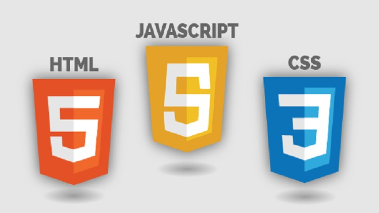
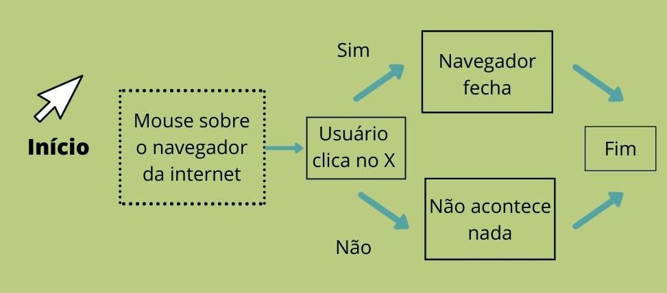

O que é programação?
De forma geral, a programação é um processo de escrita, testes e manutenção de programas de computadores. Eles, por sua vez, são compostos por conjuntos de instruções determinados pelo programador que descrevem tarefas a serem realizadas pela máquina e atendem diversas finalidades.
Linguagem de programação:

Para se comunicar com o computador utiliza-se uma linguagem específica. Essa linguagem nada mais é do que códigos padronizados que permitem que o programador comunique instruções específicas para um computador, como: com quais dados atuar, como armazenar e transmitir esses dados e o que ele deve fazer em várias outras situações. Existem vários tipos de linguagens, os mais famosos são Javascript, Ruby e Python. É importante lembrar que HTML e CSS não são linguagens de programação, na verdade elas são, respectivamente, uma linguagem de marcação de texto e uma lingugem de estilo.
Algoritmos:

Um algoritmo é uma sequência de instruções ou comandos realizados de maneira sistemática com o objetivo de resolver um problema ou executar uma tarefa, ou seja, são como uma receita de bolo: uma sequência de ações que devem ser executadas até que o objetivo final - o bolo pronto - seja atingido.
O que é um Hardware?

Hardware são os componentes físicos de um computador, como o monitor, a placa-mãe, disco rígido (HD) e teclado. O hardware de uma máquina é operado sob um conjunto de instruções, chamado de software.
O que é um Software?

Software é o conjunto de instruções dadas a um computador, de modo que ele execute determinada tarefa. É desenvolvido por meio de códigos e linguagem de programação. Por exemplo, quando ligamos um computador, é o software que transmite as informações necessárias para que o hardware funcione.